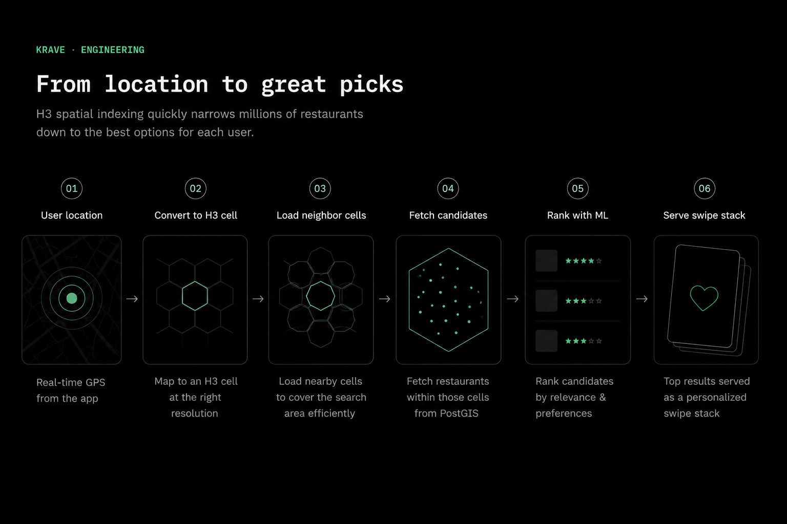
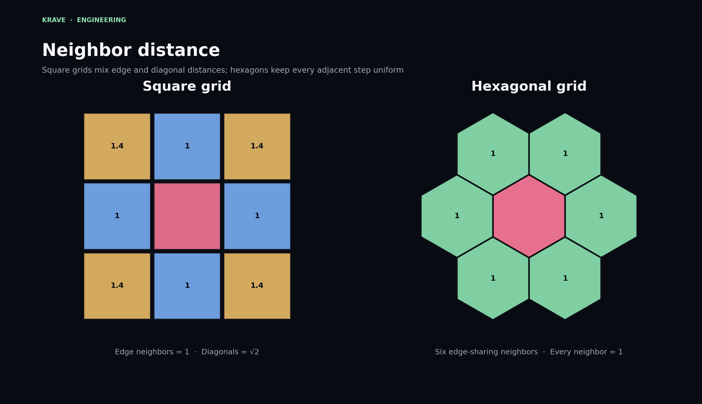
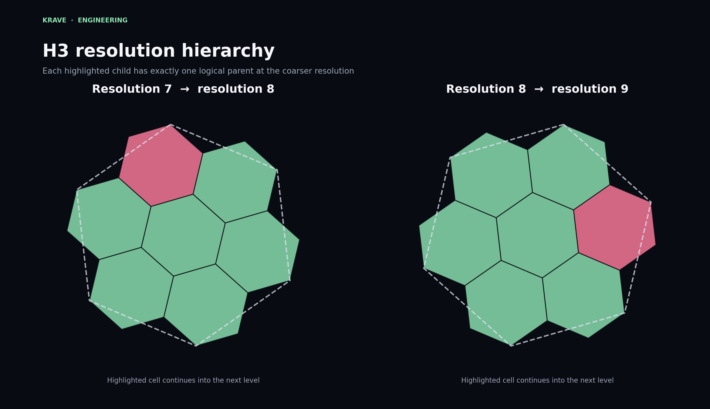
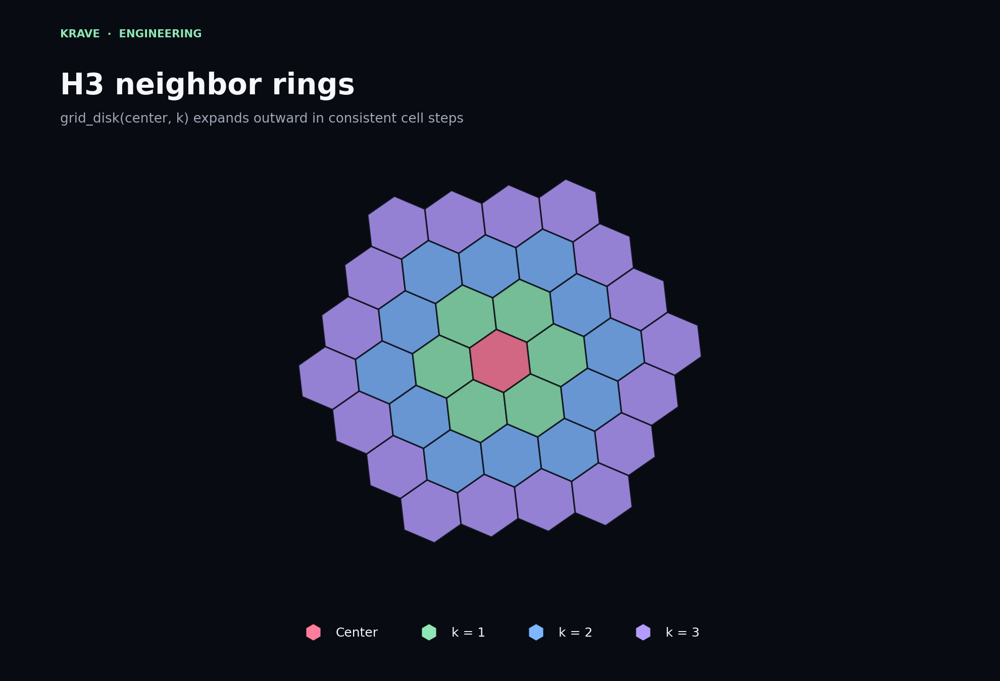
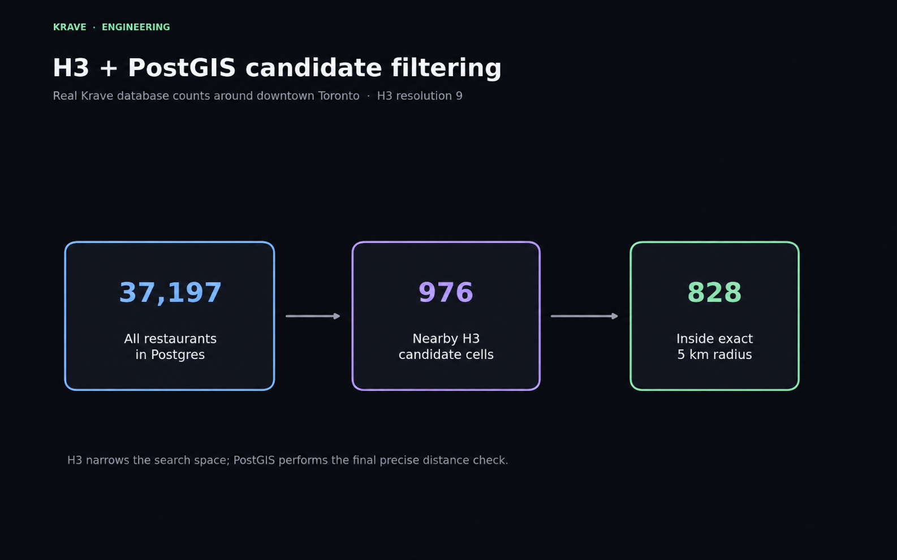
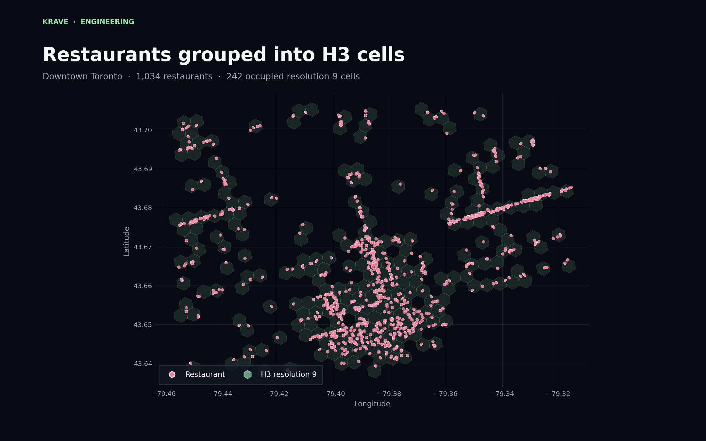
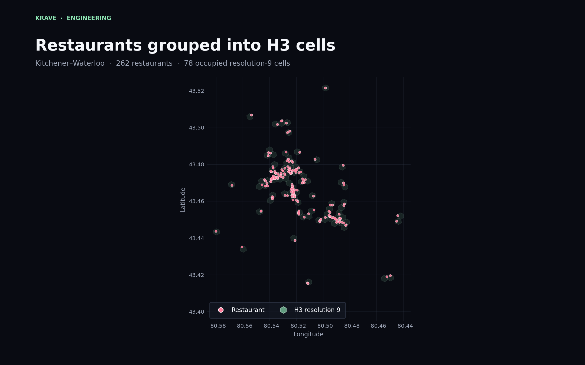

How H3 Spatial Indexing Works
How Krave combines hierarchical hexagonal indexing with PostGIS to efficiently find nearby restaurants.

The problem started with a simple query
Krave is a swipe-driven restaurant discovery app. When someone opens it, the backend needs to answer a basic question: which restaurants are actually close enough to show?
The simplest solution is to compare the user's coordinates against every restaurant in the database, calculate every distance, discard anything outside the search radius, and then rank what remains.
That works for a small catalog. It becomes less attractive as the database expands across more cities. Most restaurants are obviously too far away, yet the backend still spends time considering them.
I wanted the system to eliminate most of those impossible candidates before running precise geographic calculations. H3 became the first stage of that filtering process.
What H3 actually does
H3 is a hierarchical spatial indexing system that divides the Earth into cells. Most of those cells are hexagonal. A latitude and longitude can be converted into a compact H3 index identifying the cell that contains that point.
Instead of treating each restaurant as an unrelated coordinate, Krave can group restaurants by their H3 cells. A user's location is converted into a cell using the same resolution, and nearby cells can then be selected as an initial search area.
import h3
resolution = 9
origin_cell = h3.latlng_to_cell(
user_latitude,
user_longitude,
resolution,
)The returned value is not a distance and it is not a replacement for PostGIS. It is an index that gives the backend an efficient way to organize and retrieve geographically related records.
Why use hexagons?
Square grids have a useful simplicity, but their neighbours are not all equally far from the centre. An edge-sharing neighbour is one unit away, while a diagonally adjacent square is approximately √2 units away.
A hexagonal cell has six edge-sharing neighbours, and each adjacent step is the same distance in the grid. That makes outward expansion more consistent and reduces the directional bias found in square grids.

This does not mean a hexagon perfectly represents a circular search radius. It does mean that cell-based neighbourhood operations behave predictably, which is useful when selecting an initial set of nearby candidates.
Resolution controls the level of detail
H3 supports multiple resolutions. Lower resolutions divide the world into larger cells, while higher resolutions produce smaller and more precise cells.
Krave currently indexes restaurants at resolution 9. That provides a useful balance: the cells are small enough to narrow local restaurant searches, but large enough that the system does not need to manage an excessive number of cells for ordinary search radii.

The hierarchy is logical rather than a promise that every child boundary fits perfectly inside the visible geometry of its parent. What matters for indexing is that each finer-resolution cell can be associated with a coarser parent.
Choosing a resolution is an engineering trade-off. Larger cells reduce the number of indexes required to cover an area, but they admit more distant candidates. Smaller cells improve local precision, but a larger search may need more cells.
Expanding outward with neighbour rings
Once Krave knows the user's origin cell, it can expand outward
using
grid_disk. The function returns the centre cell and
all cells within a chosen number of grid steps.
search_steps = 3
candidate_cells = h3.grid_disk(
origin_cell,
search_steps,
)
grid_disk(center, k) expands outward in consistent
cell steps from the user's origin cell.
The value of k is a grid distance, not a direct
kilometre measurement. The physical coverage of a ring depends on
the selected H3 resolution and location.
Krave can choose enough neighbouring cells to cover the intended search area, retrieve restaurants assigned to those cells, and then perform an exact radius check afterward.
H3 narrows the search; PostGIS verifies it
H3 is not used as the final source of geographic truth. Hexagonal cells approximate an area, so some restaurants inside the selected cells may still fall outside the user's exact circular radius.
Krave therefore uses a two-stage query:
- H3 selects restaurants belonging to the user's cell and nearby candidate cells.
- PostGIS performs the precise distance check against the user's coordinates.

In this example, the database contains 7,197 restaurants. The H3 stage reduces that to 976 candidates. PostGIS then confirms that 828 are actually inside the requested five-kilometre radius.
The important result is not that H3 returns the final answer. It is that the exact geographic operation no longer needs to consider the entire restaurant catalog.
SELECT *
FROM restaurants
WHERE h3_cell = ANY(:candidate_cells)
AND ST_DWithin(
location,
ST_SetSRID(ST_MakePoint(:longitude, :latitude), 4326)::geography,
:radius_metres
);What the restaurant data looks like in practice
Spatial indexing becomes easier to understand when the cells are plotted with real restaurant coordinates.
The Toronto dataset below contains 1,034 restaurants in the plotted downtown region, spread across 242 occupied resolution-9 cells. Dense commercial corridors create visible chains and clusters of restaurant points.

Kitchener-Waterloo is much sparser in the current dataset. Its 262 plotted restaurants occupy 78 resolution-9 cells, with clusters around denser commercial areas and individual cells farther away.

The same query structure works in both regions. H3 does not require a different indexing strategy for each city. Dense regions naturally contain more occupied cells and candidates, while sparse regions contain fewer.
Where ranking fits into the pipeline
Finding nearby restaurants only produces a candidate set. It does not determine which restaurant should appear first.
After the geographic stage, Krave removes restaurants that should not appear in the current stack, including recently swiped entries. The remaining candidates can then be ranked using distance, restaurant quality signals, and the user's learned preferences.
The request flow is therefore:
- receive the user's current coordinates;
- convert the coordinates into a resolution-9 H3 cell;
- load neighbouring H3 cells;
- retrieve restaurants indexed into those cells;
- apply the exact PostGIS radius filter;
- remove ineligible or recently viewed restaurants;
- rank the remaining candidates;
- serve the result as a swipe stack.
H3 answers where the backend should look. PostGIS confirms what is truly nearby. Ranking decides what the user should see first.
Trade-offs
H3 improves the structure of Krave's location search, but it does not remove every geospatial trade-off.
| decision | benefit | trade-off |
|---|---|---|
| higher resolution | more precise candidate grouping | more cells needed for wider searches |
| lower resolution | fewer cells cover a large area | more false-positive candidates |
| larger neighbour disk | better coverage in sparse regions | more restaurants reach the exact filter |
| H3 plus PostGIS | fast candidate selection with exact distances | two spatial representations must stay consistent |
Search strategy may also need to adapt in sparse areas. If the first set of neighbouring cells does not produce enough restaurants, the backend can expand farther outward or increase the user's search radius.
Why this matters as Krave grows
A full-table distance calculation may still appear fast with a small dataset. The reason to introduce spatial indexing is not only today's query time. It is to avoid making the amount of unnecessary work grow directly with the complete catalog.
As Krave adds more cities, most newly added restaurants should have no effect on a user's local search. A restaurant in Halifax should not become a candidate for someone opening the app in Toronto.
H3 gives the database a practical way to preserve that locality. PostGIS keeps the final answer geographically accurate, and the recommendation model receives a smaller, more relevant set to rank.
Spatial indexing is mostly invisible to the person using the app, but it is part of what allows a location-based product to remain responsive as its data grows.